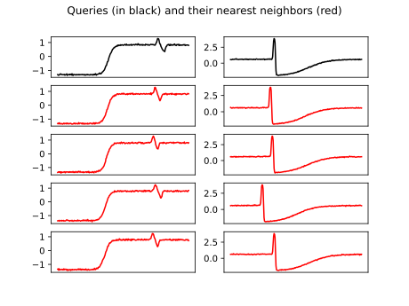

Note
Click here to download the full example code
k-NN search¶
This example performs a \(k\)-Nearest-Neighbor search in a database of time series using DTW as a base metric.
To do so, we use the tslearn.neighbors.KNeighborsTimeSeries class
which provides utilities for the \(k\)-Nearest-Neighbor algorithm
for time series.
[1] Wikipedia entry for the k-nearest neighbors algorithm
[2] H. Sakoe and S. Chiba, “Dynamic programming algorithm optimization for spoken word recognition”. IEEE Transactions on Acoustics, Speech, and Signal Processing, 26(1), 43-49 (1978).
# Author: Romain Tavenard
# License: BSD 3 clause
import numpy
import matplotlib.pyplot as plt
from tslearn.neighbors import KNeighborsTimeSeries
from tslearn.datasets import CachedDatasets
seed = 0
numpy.random.seed(seed)
X_train, y_train, X_test, y_test = CachedDatasets().load_dataset("Trace")
n_queries = 2
n_neighbors = 4
knn = KNeighborsTimeSeries(n_neighbors=n_neighbors)
knn.fit(X_train)
ind = knn.kneighbors(X_test[:n_queries], return_distance=False)
plt.figure()
for idx_ts in range(n_queries):
plt.subplot(n_neighbors + 1, n_queries, idx_ts + 1)
plt.plot(X_test[idx_ts].ravel(), "k-")
plt.xticks([])
for rank_nn in range(n_neighbors):
plt.subplot(n_neighbors + 1, n_queries,
idx_ts + (n_queries * (rank_nn + 1)) + 1)
plt.plot(X_train[ind[idx_ts, rank_nn]].ravel(), "r-")
plt.xticks([])
plt.suptitle("Queries (in black) and their nearest neighbors (red)")
plt.show()
Total running time of the script: ( 0 minutes 0.544 seconds)